作者： Kario Chen
我最开始用龙虾，也是 Opus 从头到尾，觉得这样才算是释放了最大的生产力。随着 token 越来越不够用，我开始持续探索节省 token 的方案， 越深入越发现：真正的省 token 不是削减投入、不是降低预算，而是在保证效率和产能的前提下，用结构化的方式替代蛮力输入。本质上就是学会工程化地用 AI，关键在于一个动作：在合适的时间，把合适的上下文，装载进合适的模型。这不仅省 token，更重要的是让 AI 的每一分注意力都用在刀刃上。
为什么 AI 越用越贵，还越用越笨
在ChatBot时期，模型看到的输入基本就是官方预设的系统提示词，以及用户输入框里打字的提示词，再加上一些多轮对话的历史记忆。但是在进入龙虾时代后，在token看板上随便观测任何一个任务执行的agent调用链路，以及对照公开的 token 用量分析，才发现打字输入的提示词，仅仅只是模型输入的冰山一角了，工具在多次调用、skills在反复装载、本地文件在不断被读取……随之而来的是历史上下文的几何级膨胀。我们手打输入的那几个字，在整个 Token 账单里其实只是零头。
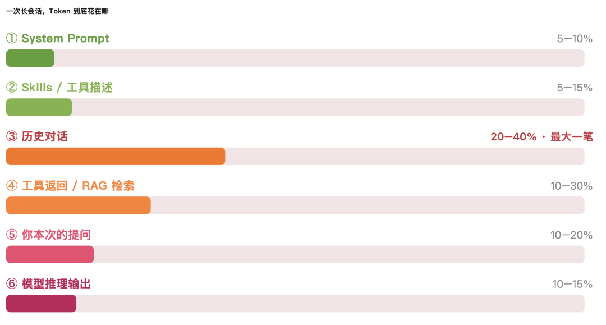
看完这个分布，我们不难发现，上下文如何管理，是一个有技术且很需要精进的点。因为我们都知道现在上下文最大的模型也就是1M左右。不管它的话，模型会越用越笨，所有多出来的历史上下文，只能依赖龙虾工具自己的上下文压缩能力来维系对话的进行。但是这个压缩一定是有损的，在压缩过程中可能就会丢失了我们之前定好的约束，反复问已经确认过的事情。这也就是经常能听到的 Context Rot（上下文腐烂）。
上下文 token 越多，模型召回准确率持续下降。根因在 Transformer 架构本身：n 个 token 之间是 n² 的两两关联，上下文越长，注意力被摊得越薄。越多的无效信息就反而冲淡了我们真正想要大模型读取到的上下文内容。
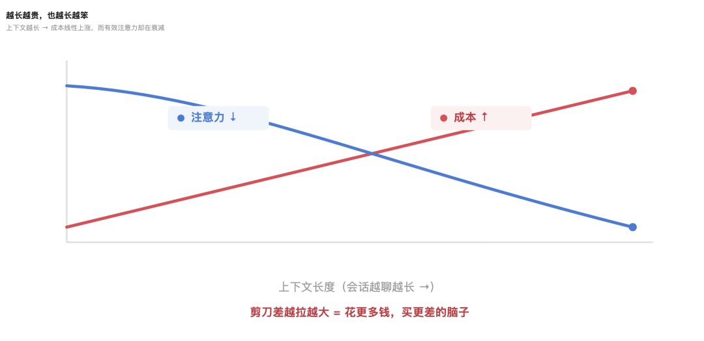
所以对上下文做好合适的工程化管理，既能省 Token，事实上也是在让 AI 变聪明，产出更好的效果。接下来四章拆成四个动作：最小上下文、清晰理想态、Harness 架构分层、动态选型。
别让 AI "读全文"，要让它"按需取"
说了管理上下文的必要性，那到底什么是"好的上下文"？其实就是要求我们找到那个最小的、信号最强的 token 集合(the smallest set of high-signal tokens)。不是喂得越多越好，是喂得越准越好。
我们可以参考大多数龙虾针对代码仓库做索引的设计方案：不把整个代码库一股脑塞进上下文，只维护一套轻量索引（文件路径、查询语句、链接），用到时用 grep / glob / read 现场搜索读取。这套打法叫 JIT（Just-in-Time，即时检索）。
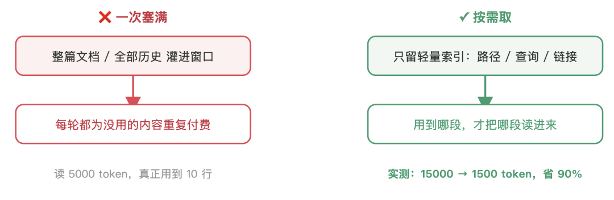
JIT 解决"进来时少装"。长的多轮会话还有另一个问题：会话本身会膨胀。这就需要上下文卸载：把 AI 上下文当存储系统来管理，缓存该缓存，落盘该落盘，分层存储。
想象你的龙虾就像一台电脑。电脑有多层存储：CPU 缓存最快但最小，内存次之，硬盘最慢但容量无限。AI 的上下文系统也一样：
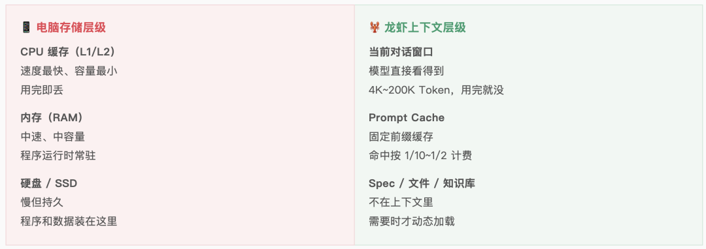
对标这个层级，卸载的策略就清晰了：
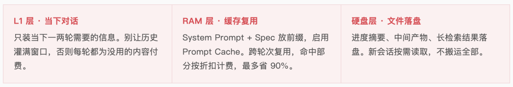
具体怎么操作：
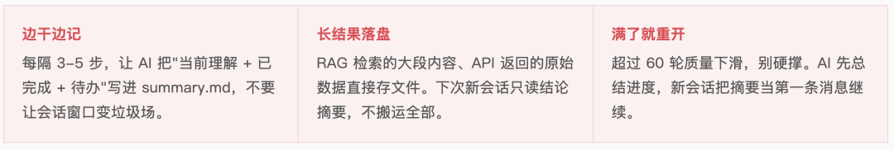
提到缓存，这里顺带还有一个经常被忽略的省 token 技巧：Prompt Caching（提示缓存命中）。固定的系统指令和工具定义放前缀，重复部分只按零头计费。启用缓存最多可降低 90% 的输入成本，在尝试使用 DeepSeek 模型执行任务时，就经常能被账单的性价比惊艳到。
越约束，越自由：花五分钟说清楚，省五十分钟拉扯
很多 Token，是在"猜来猜去"里烧掉的。你扔一句"帮我写个登录页"，AI 只能猜你想要什么；写出来不对，你改，它再猜。五六轮过去，Token 花了很多，事情还没做好。
写提示词就像调收音机，要找到对的频率高度（right altitude）。太低：硬编码一堆 if-else；太高：说一句"请专业地完成任务"刚刚好：给清目标和约束，别把每步都规定死。
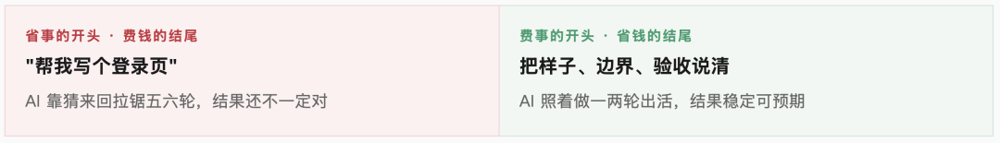
出发前花五分钟回答以下三个问题，能省掉后面五十分钟的反复。注意是"策展"不是"堆砌"，不要塞一长串边缘情况试图覆盖所有规则，而是挑几个多样化、有代表性的样板。
这三个问题的背后是一个递进的金字塔：给示例（One-Shot）最准确，给规则（Spec / 约束）次之，让虾猜（光提需求）最差。
一个真实的例子比一千字的文字描述更高效。但注意，这是"策展"不是"堆砌"，不要试图列出一长串边缘情况来覆盖所有规则，而是精心挑选几个多样化、有代表性的样板。
把这些约束和示例固化下来，就是给 AI 装上护栏。护栏是信任的基础。没有护栏，你只敢让 AI 做简单的事；有了护栏，你才敢把复杂的活交给它。如果工具集臃肿、功能重叠、规则模糊，即使人类工程师都说不清该用哪个工具、该遵循哪条规则，AI 也不可能猜对。
约束越精确 → AI 越不用猜 → 一次到位 → 返工越少 → Token 越省。同时输出质量也会更高。
省 Token 和把 AI 用好，就是同一件事。
活太大，就别让一个脑子硬扛
有些任务本身复杂，单个会话很快被细节塞满。这就需要从架构层面重新思考：不是一个虾硬扛，而是多个虾的分工和协作。
第一部分：主动压缩 · 会话的三段生命周期
一个会话不是越长越好。随着轮次增加，虾的表现会经历三个阶段：
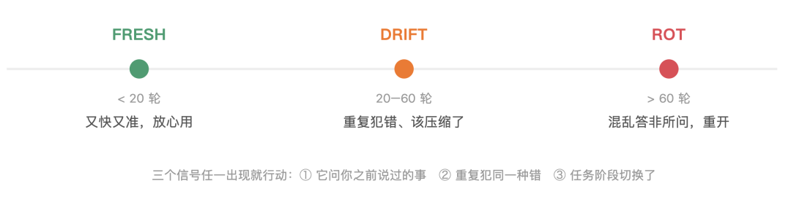
· FRESH（清醒） ：前 20 轮，虾的状态最好。输入输出精准、理解深度到位、响应快速。这个时候就放心用，不用省。
·DRIFT（漂移）：20~60 轮，上下文开始有点乱。虾开始重复犯同一种错、忘了早期的约定、输出变啰嗦。这个时候该动手压缩了。把历史摘要一下，新窗口继续。
·ROT（腐烂）： 超过 60 轮，虾已经是另一个样子了。风格突变、问题答非所问、逻辑混乱。这个时候已经没救了，必须重开。
关键是不要硬撑。一旦进入 DRIFT，就主动摘要一下，拿摘要启动新会话继续。主动做一次上下文压缩、保留摘要 + 最近的几个文件，新会话继续服务。成本降，效果也没掉。
第二部分：子智能体架构 · 轻主虾 + 重子虾
但即使你很会压缩，有些任务也就是特别复杂。比如一个月级的长期项目，需要全程精细化决策。光靠"按阶段压缩"还是不够，因为你经常需要在执行中途改需求、改方案。这时候就该换个架构：不是一个虾从头到尾，而是一个主虾 + 多个子虾。
核心思想很简单：主虾只做决策和调度，子虾做具体执行。主虾的工作是理解全局、拆分任务、整合结论。子虾各自拿一个明确的、最小粒度的原子任务，用干净的上下文窗口，完成后只交回结果，不回灌过程。
举个例子：写一个复杂的系统设计文档。旧方法是一个 Opus 从需求分析 → 架构设计 → 代码框架 → 文档输出，一个会话全搞定。问题是上下文越堆越厚，最后虾被前面的细节压得喘不过气，新的需求改动反而容易被忽视。
新方法是：主虾接到"写系统设计文档"的任务，拆成 5 个子任务给子虾：①理解需求，②梳理关键决策点，③设计核心架构，④给出代码参考，⑤生成文档框架。
每个子虾拿一个子任务，干完把结论交回来，主虾汇总最后输出。
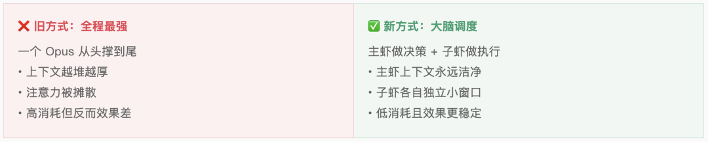
这样做有三个好处：
①主虾永不疲劳：强模型只在决策点出场，上下文从不积压。即使项目跑数千行代码，主虾脑子一直是清醒的。
②子虾是原子单位：每个子虾的任务完全独立、不需要跨轮积累上下文。用便宜点的模型就够了，一次搞定。
③需求变更无痛：中途改需求，主虾重新拆分即可。不用推翻整个进度，只调整涉及的子虾。
关键是任务的拆分粒度。不是拆成 5 个大阶段，而是拆到最低细粒度的原子任务，每个都完全独立、不需要跨轮上下文。比如："给代码补充单测""校验 JSON 结构""从文档提取决策点"。
这样子虾用 Sonnet 甚至更便宜的模型就够了，成本降到原来的 20~30%。
回到开头：别全程开着最强模型
按阶段切换模型 是最直接的方案。简单任务用快模型，关键任务才用最强的：
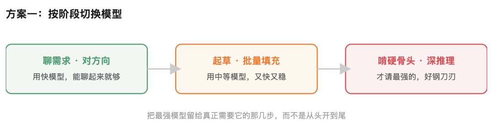
这招实际上手快，但手动切换麻烦，且如果任务本身高度复杂，需要全程精细化决策，仅靠"按阶段切换"其实还不够。
这里还有一个更优雅的方案：大脑+手脚架构。用一个强的模型当主 Agent（大脑）。它的唯一职责是理解全局、拆分任务、调度执行、汇总决策。然后让性价比高的模型作为 Sub-Agent（手脚）。接收大脑下达的"细粒度原子任务"，逐个完成，只反馈结果，不回灌过程。
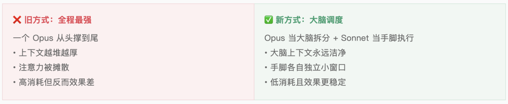
关键是任务拆分粒度。大脑不是把一个大任务砍成五六个中等任务（这还是太粗），而是拆到最低细粒度的原子任务。每个都是完全独立、不需要上下文积累、可以用中等模型一把搞定的单元。比如："给这段代码加注释""检查这个JSON 字段有没有缺""从这个文本里提取核心信息"。
这样做的妙处在于：
① 大脑永不疲劳：强模型只在决策点出场，上下文从不积压。即使项目跑数千行代码，主虾脑子一直是清醒的。
② 手脚可以并行：五个原子任务可以同时派给五个便宜模型实例，并行完成，大脑只需在最后合并结果。 五个原子任务可以同时派给五个便宜模型实例，并行完成，大脑只需在最后合并结果。
③ 成本剧降：大脑的调用次数少（只在关键时刻），手脚用便宜模型。整体成本可能只有"全程 Opus"的 20–30%。
这也恰似软件工程的"高内聚、低耦合"？把模型当团队编制，大脑和手脚职责明确，信息流清晰，反而削弱单一模型的上下文焦虑。
认清账单、最小上下文、清晰理想态、Harness 架构分层、动态选型：省 token 和怎么把 AI 用好，本质都是一句话：在合适的时间，把合适的上下文，装载进合适的模型
一分钟视频速览：
一键预约直播：
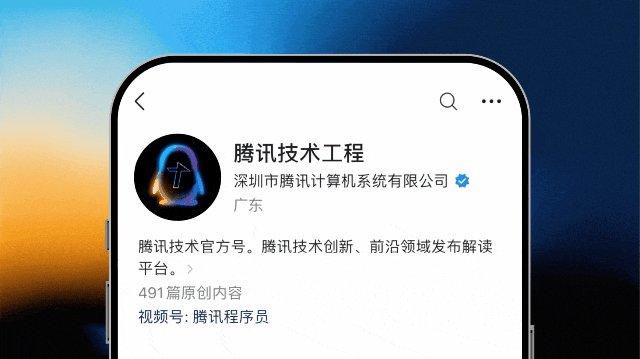